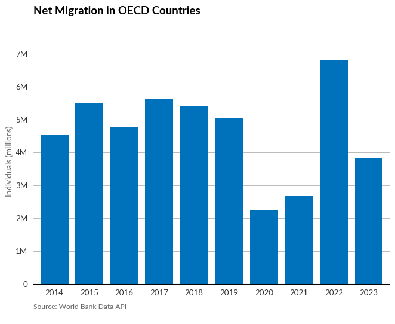
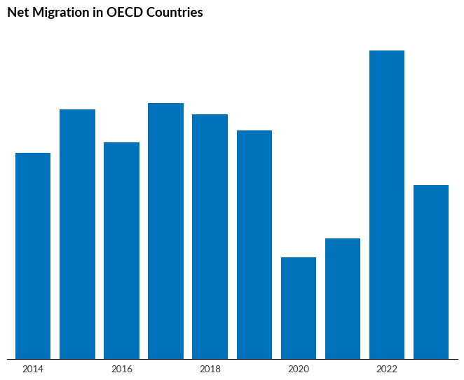
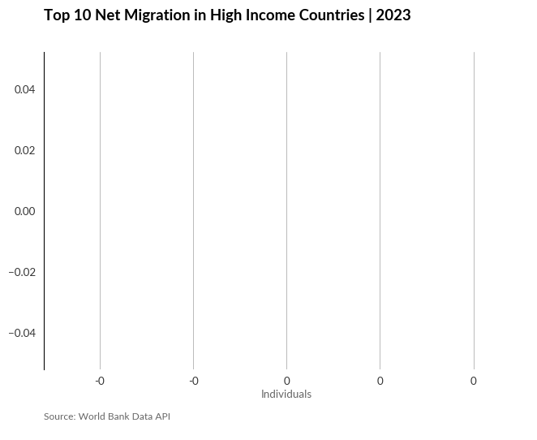
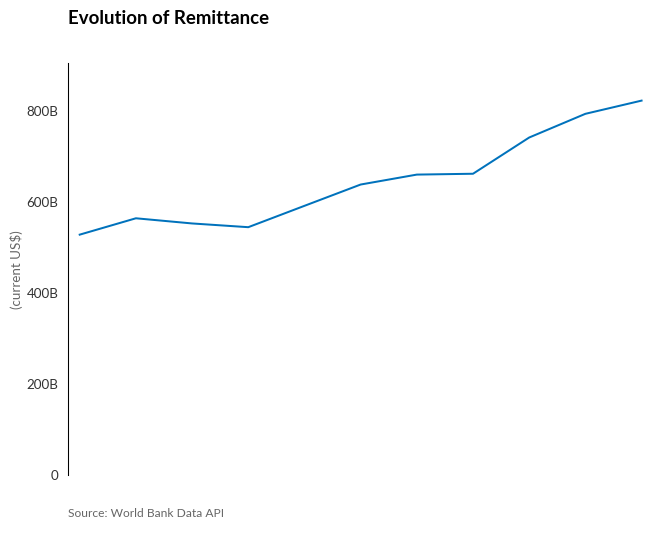
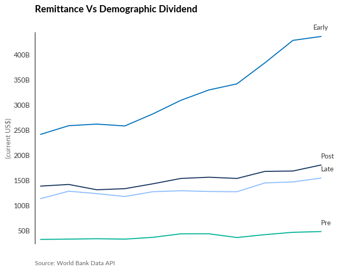
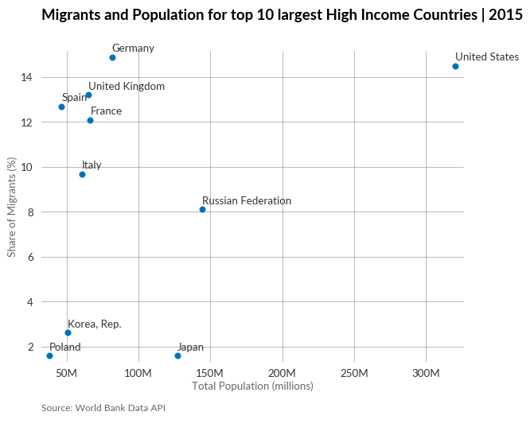
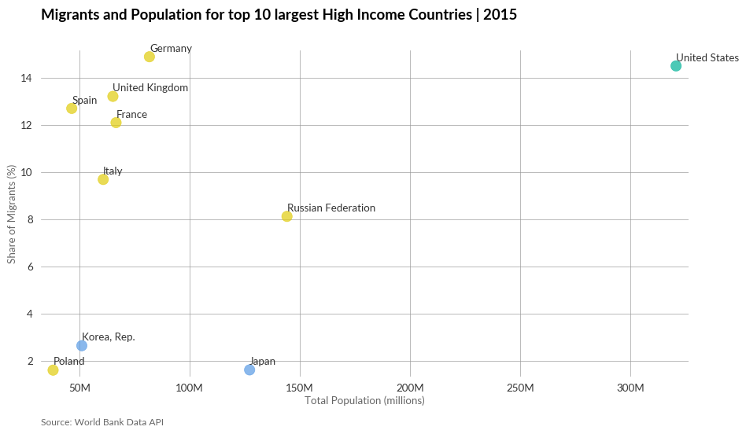
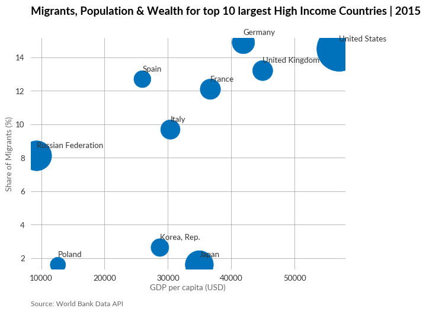
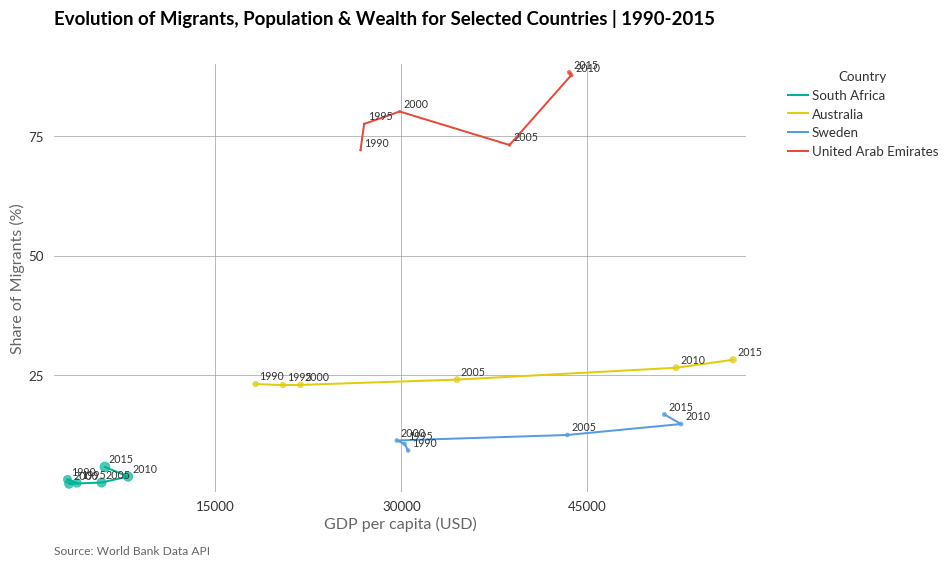
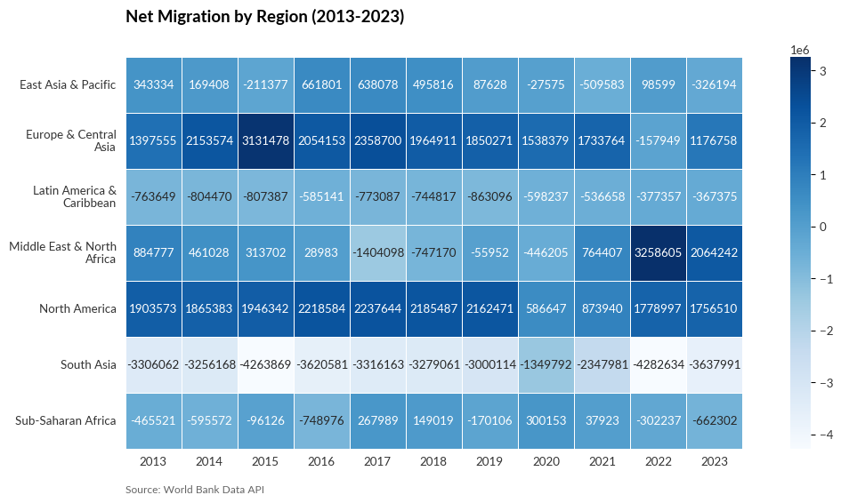

import wbdata
import pandas as pd
# Fetch country information from World Bank API
geo = wbdata.get_countries()
# Convert to DataFrame
geo = pd.DataFrame(geo)
# Extract nested dictionary information
geo['region'] = geo['region'].apply(lambda x: x['value'] if isinstance(x, dict) else None)
geo['adminregion'] = geo['adminregion'].apply(lambda x: x['value'] if isinstance(x, dict) else None)
geo['incomeLevel'] = geo['incomeLevel'].apply(lambda x: x['value'] if isinstance(x, dict) else None)
geo['lendingType'] = geo['lendingType'].apply(lambda x: x['value'] if isinstance(x, dict) else None)
# Convert columns to appropriate data types
geo['longitude'] = pd.to_numeric(geo['longitude'], errors='coerce')
geo['latitude'] = pd.to_numeric(geo['latitude'], errors='coerce')
# Set index to country ID
geo.set_index('id', inplace=True)A Mapplotlib theme for IOM
How-to
Examples in Practice
The World Bank Data API offer a series of indicators in relation with migration:
Core Migration Metrics
SM.POP.NETM: Net migration — The net total of migrants during a period (immigrants minus emigrants)SM.POP.MIGR: Net migration rate — The net number of migrants per 1,000 population during a periodSM.POP.TOTL: International migrant stock, total — The total number of people living in a country other than where they were bornSM.POP.TOTL.ZS: International migrant stock (% of population) — Migrant population as percentage of total population
Remittances
BX.TRF.PWKR.CD.DT: Personal remittances received (current US$) — Sum of personal transfers and compensation, Migrant worker transfers and border worker salariesBX.TRF.PWKR.DT.GD.ZS: Personal remittances (% of GDP) — Remittances as percentage of GDPSI.RMT.COST.OB.ZS: Average transaction cost of sending remittances from a specific country (%)SI.RMT.COST.IB.ZS: Average transaction cost of sending remittances to a specific country (%)
Pulling the geographic reference
We will use the wbdata module
import sys
sys.path.append("iompyplotstyle") # Add custom path
import iompyplotstyle Column chart
In a column chart, each category is represented by a vertical rectangle, with the height of the rectangle being proportional to the values being plotted. The chart with iompyplotstyle + column styles:
for the first two examples, we will look at Migrant Stock for Developped Countries
import pandas as pd
import wbdata
# Fetch the data
migrant_stock = wbdata.get_dataframe({"SM.POP.NETM": "Net Migration"}, country='all', date=("2013","2023"), freq='Y', source=None, parse_dates=False, keep_levels=False, skip_cache=False)
# "2011","2012","2013","2014","2015","2016","2017","2018","2019","2020","2021"
# Reset the index of the main DataFrame to make 'country' a column
migrant_stock = migrant_stock.reset_index()
migrant_stock.rename(columns={'country': 'country_name', 'date': 'year'}, inplace=True)
# Merge the main DataFrame with the country info to get the country code
migrant_stock = pd.merge(migrant_stock, geo, left_on='country_name', right_on='name', how='left')
#print(migrant_stock.columns)
#print(migrant_stock['year'].unique())Let’s now calculate Net Migration Series in OECD Countries
# Clean up - drop rows with missing values and convert to numeric
migrant_stock = migrant_stock.dropna(subset=['Net Migration'])
migrant_stock['Net Migration'] = pd.to_numeric(migrant_stock['Net Migration'])
migrant_stock['year'] = pd.to_numeric(migrant_stock['year'])
all_migrant_stock_oecd_2013_2023 = (
migrant_stock[['country_name', 'Net Migration', 'region', 'incomeLevel','year' ]]
.query("country_name == 'OECD members'")
.sort_values('year', ascending=False)
.head(10)
.reset_index(drop=True)
)
# Save the top10_migrant_stock DataFrame to CSV
all_migrant_stock_oecd_2013_2023.to_csv('data-raw/column.csv', index=False)Basic column chart
# import libraries
import matplotlib.pyplot as plt
import pandas as pd
import iompyplotstyle
plt.style.use(['iompyplotstyle','column'])
#load data set
df = pd.read_csv('data-raw/column.csv')
#compute data array for plotting
x = df['year']
y = df['Net Migration']
#plot the chart
fig, ax = plt.subplots()
bar_plot = ax.bar(x, y)
#set chart title
ax.set_title('Net Migration in OECD Countries')
#set y-axis title
ax.set_ylabel('Individuals (millions)')
#set y-axis labels
ax.tick_params(labelleft=True)
#set y-axis limit
ylimit = plt.ylim(0, max(y)+0.1*(max(y)))
#set tick based on x value
ax.set_xticks(x)
#set grid
ax.grid(axis='y')
#format y-axis tick labels
def number_formatter(x, pos):
if x >= 1e6:
s = '{:1.0f}M'.format(x*1e-6)
elif x < 1e6 and x >= 1e3:
s = '{:1.0f}K'.format(x*1e-3)
else:
s = '{:1.0f}'.format(x)
return s
ax.yaxis.set_major_formatter(number_formatter)
#set chart source and copyright
plt.annotate('Source: World Bank Data API', (0,0), (0, -25), xycoords='axes fraction', textcoords='offset points', va='top', color = '#666666', fontsize=9)
plt.annotate(' ', (0,0), (0, -35), xycoords='axes fraction', textcoords='offset points', va='top', color = '#666666', fontsize=9)
#adjust chart margin and layout
fig.tight_layout()
#show chart
plt.show()
Column chart with data label
# import libraries
import matplotlib.pyplot as plt
import pandas as pd
plt.style.use(['iompyplotstyle','column'])
#load data set
df = pd.read_csv('data-raw/column.csv')
#compute data array for plotting
x = df['year']
y = df['Net Migration']
#plot the chart
fig, ax = plt.subplots()
bar_plot = ax.bar(x, y)
#format y-axis tick labels
def number_formatter(x, pos):
if x >= 1e6:
s = '{:1.0f}M'.format(x*1e-6)
elif x < 1e6 and x >= 1e3:
s = '{:1.0f}K'.format(x*1e-3)
else:
s = '{:1.0f}'.format(x)
return s
ax.yaxis.set_major_formatter(number_formatter)
#set chart title
ax.set_title('Net Migration in OECD Countries')
#set subtitle
#plt.suptitle('Number of people in millions', x=0.025, y=0.88, ha='left')Text(0.0, 1.0, 'Net Migration in OECD Countries')
Bar chart
A bar chart is a chart in which each category is represented by a horizontal rectangle, with the length of the rectangle proportional to the values being plotted. The horizontal axis shows data value, and the vertical axis displays the categories being compared.
The chart with iompyplotstyle + bar styles:
Let’s compute net migration for High Income Countries in 2023:
# Clean up - drop rows with missing values and convert to numeric
migrant_stock = migrant_stock.dropna(subset=['Net Migration'])
migrant_stock['Net Migration'] = pd.to_numeric(migrant_stock['Net Migration'])
top10_migrant_stock_high_income_2023 = (
migrant_stock[['country_name', 'Net Migration', 'region', 'incomeLevel','year' ]]
.query("incomeLevel == 'High income' & year == '2023'")
.sort_values('Net Migration', ascending=False)
.head(10)
.reset_index(drop=True)
)
# Save the top10_migrant_stock DataFrame to CSV
top10_migrant_stock_high_income_2023.to_csv('data-raw/bar.csv', index=False)Basic bar chart
# import libraries
import matplotlib.pyplot as plt
import pandas as pd
from textwrap import wrap
plt.style.use(['iompyplotstyle','bar'])
#load data set
df = pd.read_csv('data-raw/bar.csv')
#sort value in descending order
df.sort_values('Net Migration',inplace=True)
#prepare data array for plotting
x = df['country_name']
y = df['Net Migration']
#wrap long labels
x = [ '\n'.join(wrap(l, 20)) for l in x ]
#plot the chart
fig, ax = plt.subplots()
bar_plot = ax.barh(x, y)
#set chart title
ax.set_title('Top 10 Net Migration in High Income Countries | 2023')
#set x-axis title
ax.set_xlabel('Individuals')
#set x-axis label
ax.tick_params(labelbottom=True)
#set x-axis limit
#ylimit = plt.xlim(0, max(y)+0.1*(max(y)))
#show grid below the bars
ax.grid(axis='x')
#format x-axis tick labels
def number_formatter(x, pos):
if x >= 1e6:
s = '{:1.0f}M'.format(x*1e-6)
elif x < 1e6 and x >= 1e3:
s = '{:1.0f}K'.format(x*1e-3)
else:
s = '{:1.0f}'.format(x)
return s
ax.xaxis.set_major_formatter(number_formatter)
#set chart source and copyright
plt.annotate('Source: World Bank Data API', (0,0), (0, -40), xycoords='axes fraction', textcoords='offset points', va='top', color = '#666666', fontsize=9)
plt.annotate(' ', (0,0), (0, -50), xycoords='axes fraction', textcoords='offset points', va='top', color = '#666666', fontsize=9)
#adjust chart margin and layout
fig.tight_layout()
#show chart
plt.show()
Bar chart with data label
# import libraries
import matplotlib.pyplot as plt
import pandas as pd
from textwrap import wrap
plt.style.use(['iompyplotstyle','bar'])
#load data set
df = pd.read_csv('data-raw/bar.csv')
#sort value in descending order
df.sort_values('Net Migration', inplace=True)
#set chart title
ax.set_title('Top 10 Net Migration in High Income Countries | 2023')
#prepare data array for plotting
x = df['country_name']
y = df['Net Migration']
#wrap long labels
x = [ '\n'.join(wrap(l, 20)) for l in x ]
#plot the chart
fig, ax = plt.subplots()
bar_plot = ax.barh(x, y)Line chart
A line chart is a type of chart that displays the evolution of one or several numeric variables over a continuous interval or time period. Typically, the x-axis is used for a timescale or a sequence of intervals, while the y-axis reports values across that progression.
The chart with iompyplotstyle + line styles:
import wbdata
remittance = wbdata.get_dataframe(
indicators={'BX.TRF.PWKR.CD.DT': 'remittance' },
country='all',
date=("2013","2023"),
freq='Y',
source=None,
parse_dates=False,
keep_levels=False,
skip_cache=False
)
remittance = remittance.reset_index()
remittance.rename(columns={'country': 'country_name', 'date': 'year'}, inplace=True)
remittance = pd.merge(remittance, geo, left_on='country_name', right_on='name', how='left') remittance_world = (
remittance[['country_name', 'remittance','year' ]]
.query("country_name == 'World'")
.sort_values('year', ascending=False)
)
remittance_world.to_csv('data-raw/line.csv', index=False)Single line chart
# import libraries
import numpy as np
import matplotlib.pyplot as plt
import pandas as pd
import iompyplotstyle
#plt.style.use(['iompyplotstyle','line'])
#compute data array for plotting
df = pd.read_csv('data-raw/line.csv')
#compute data for plotting
x = df['year']
y = df['remittance']
#plot the chart
fig, ax = plt.subplots()
bar_plot = ax.plot(x, y)
#set chart title
plt.title('Evolution of Remittance ')
#plt.suptitle('Personal transfers/compensation received')
#set y-axis label
ax.set_ylabel('(current US$)')
#set y-axis limit
ylimit = plt.ylim(0, max(y)+0.1*(max(y)))
#format x-axis tick labels
def number_formatter(x, pos):
"""Format axis tick labels with appropriate units (K, M, B)"""
if abs(x) >= 1e9: # Billions
s = '{:1.1f}B'.format(x*1e-9)
elif abs(x) >= 1e6: # Millions
s = '{:1.1f}M'.format(x*1e-6)
elif abs(x) >= 1e3: # Thousands
s = '{:1.1f}K'.format(x*1e-3)
else: # Units
s = '{:1.0f}'.format(x)
# Remove .0 from whole numbers for cleaner display
if '.0' in s:
s = s.replace('.0', '')
return s
ax.yaxis.set_major_formatter(number_formatter)
#set chart source and copyright
plt.annotate('Source: World Bank Data API', (0,0), (0, -25), xycoords='axes fraction', textcoords='offset points', va='top', color = '#666666', fontsize=9)
plt.annotate(' ', (0,0), (0, -35), xycoords='axes fraction', textcoords='offset points', va='top', color = '#666666', fontsize=9)
#adjust chart margin and layout
fig.tight_layout()
#show chart
plt.show()
Multiple line chart
#print(remittance['country_name'].unique())
demographic_categories = [
'Early-demographic dividend',
'Late-demographic dividend',
'Post-demographic dividend',
'Pre-demographic dividend'
]
remittance_demo = (
remittance[['country_name', 'remittance','year' ]]
.query("country_name in @demographic_categories")
.sort_values('year', ascending=False)
)
remittance_demo = remittance_demo.pivot(index='year', columns='country_name', values='remittance')
remittance_demo = remittance_demo.reset_index()
remittance_demo.to_csv('data-raw/line2.csv', index=False)# import libraries
import numpy as np
import matplotlib.pyplot as plt
import pandas as pd
#plt.style.use(['iompyplotstyle','line'])
#compute data array for plotting
df = pd.read_csv('data-raw/line2.csv')
#compute data for plotting
x = df['year']
y1 = df['Early-demographic dividend']
y2 = df['Late-demographic dividend']
y3 = df['Post-demographic dividend']
y4 = df['Pre-demographic dividend']
#plot the chart
fig, ax = plt.subplots()
bar_plot = ax.plot(x, y1)
bar_plot = ax.plot(x, y2)
bar_plot = ax.plot(x, y3)
bar_plot = ax.plot(x, y4)
#set chart title
ax.set_title('Remittance Vs Demographic Dividend')
#set y-axis label
ax.set_ylabel('(current US$)')
#set y-axis limit
#ylimit = plt.ylim(0, 60 * 1e6)
#set direct labeling for lines
early_xpos=x.iloc[-1]
early_ypos=y1.iloc[-1]
plt.annotate("Early", (early_xpos,early_ypos),
textcoords="offset points",
xytext=(0,10),
ha='center')
late_xpos=x.iloc[-1]
late_ypos=y2.iloc[-1]
plt.annotate("Late", (late_xpos,late_ypos),
textcoords="offset points",
xytext=(0,10),
ha='left')
post_xpos=x.iloc[-1]
post_ypos=y3.iloc[-1]
plt.annotate("Post", (post_xpos,post_ypos),
textcoords="offset points",
xytext=(0,10),
ha='left')
pre_xpos=x.iloc[-1]
pre_ypos=y4.iloc[-1]
plt.annotate("Pre", (pre_xpos,pre_ypos),
textcoords="offset points",
xytext=(0,10),
ha='left')
#format x-axis tick labels
def number_formatter(x, pos):
"""Format axis tick labels with appropriate units (K, M, B)"""
if abs(x) >= 1e9: # Billions
s = '{:1.1f}B'.format(x*1e-9)
elif abs(x) >= 1e6: # Millions
s = '{:1.1f}M'.format(x*1e-6)
elif abs(x) >= 1e3: # Thousands
s = '{:1.1f}K'.format(x*1e-3)
else: # Units
s = '{:1.0f}'.format(x)
# Remove .0 from whole numbers for cleaner display
if '.0' in s:
s = s.replace('.0', '')
return s
ax.yaxis.set_major_formatter(number_formatter)
#set chart source and copyright
plt.annotate('Source: World Bank Data API', (0,0), (0, -25), xycoords='axes fraction', textcoords='offset points', va='top', color = '#666666', fontsize=9)
plt.annotate(' ', (0,0), (0, -35), xycoords='axes fraction', textcoords='offset points', va='top', color = '#666666', fontsize=9)
#adjust chart margin and layout
fig.tight_layout()
#show chart
plt.show()
Scatterplot
A scatterplot is a type of visualization using Cartesian Coordinates to display two variables for a set of data. The data are displayed as a collection of dots. The position of each dot on the horizontal and vertical axis indicates the values for an individual data point.
The chart with iompyplotstyle + scatterplot styles:
import wbdata
pop_and_perc = wbdata.get_dataframe(
indicators={'SP.POP.TOTL': 'total_population',
'SM.POP.TOTL.ZS': 'percent_migrant',
'NY.GDP.PCAP.CD': 'gdp_capita' },
country='all',
date=("1990","2015"),
freq='Y',
source=None,
parse_dates=False,
keep_levels=False,
skip_cache=False
)
pop_and_perc = pop_and_perc.reset_index()
pop_and_perc.rename(columns={'country': 'country_name', 'date': 'year'}, inplace=True)
pop_and_perc = pd.merge(pop_and_perc, geo, left_on='country_name', right_on='name', how='left')
# Clean up - drop rows with missing values and convert to numeric
pop_and_perc = pop_and_perc.dropna(subset=['total_population'])
pop_and_perc = pop_and_perc.dropna(subset=['percent_migrant'])pop_and_perc_high = (
pop_and_perc[['country_name', 'percent_migrant', 'total_population', 'incomeLevel', 'region', 'gdp_capita', 'year' ]]
.query("incomeLevel == 'High income' & year == '2015'")
.sort_values('total_population', ascending=False)
.head(10)
)
pop_and_perc_high.to_csv('data-raw/scatterplot.csv', index=False)Scatterplot
# import libraries
import matplotlib.pyplot as plt
import pandas as pd
plt.style.use(['iompyplotstyle','scatterplot'])
#load data set
df = pd.read_csv('data-raw/scatterplot.csv')
#compute data array for plotting
x = df['total_population']
y = df['percent_migrant']
label = df['country_name']
#plot the chart
fig, ax = plt.subplots()
ax.scatter(x, y, s=30)
# Loop for annotation of all points
for i in range(len(x)):
plt.annotate(label[i], (x[i], y[i]), textcoords="offset points", xytext=(0,5), ha='left')
#set chart title
ax.set_title('Migrants and Population for top 10 largest High Income Countries | 2015')
#set axis label
ax.set_xlabel('Total Population (millions)')
ax.set_ylabel('Share of Migrants (%)')
#format axis tick labels
def number_formatter(x, pos):
if x >= 1e6:
s = '{:1.0f}M'.format(x*1e-6)
elif x < 1e6 and x > 0:
s = '{:1.0f}K'.format(x*1e-3)
else:
s = '{:1.0f}'.format(x)
return s
ax.xaxis.set_major_formatter(number_formatter)
#ax.yaxis.set_major_formatter(number_formatter)
#set chart source and copyright
plt.annotate('Source: World Bank Data API', (0,0), (0, -40), xycoords='axes fraction', textcoords='offset points', va='top', color = '#666666', fontsize=9)
plt.annotate(' ', (0,0), (0, -50), xycoords='axes fraction', textcoords='offset points', va='top', color = '#666666', fontsize=9)
#adjust chart margin and layout
fig.tight_layout()
#show chart
plt.show()
Scatterplot with colours
# import libraries
import matplotlib.pyplot as plt
import pandas as pd
plt.style.use(['iompyplotstyle','scatterplot'])
#load data set
df = pd.read_csv('data-raw/scatterplot.csv')
#compute data array for plotting
x = df['total_population']
y = df['percent_migrant']
label = df['country_name']
regions = df['region']
# Create a color mapping for regions
unique_regions = regions.unique()
color_palette = ['#00B398', '#E1CC0D', '#589BE5'] # Your chosen colors
region_colors = {region: color_palette[i] for i, region in enumerate(unique_regions)}
# Map each point to its region color
point_colors = [region_colors[region] for region in regions]
#plot the chart
fig, ax = plt.subplots(figsize=(10, 6))
scatter = ax.scatter(x, y, s=100, c=point_colors, alpha=0.7) # Increased point size and added transparency
# Loop for annotation of all points
for i in range(len(x)):
plt.annotate(label[i], (x[i], y[i]), textcoords="offset points", xytext=(0,5), ha='left')
#set chart title
ax.set_title('Migrants and Population for top 10 largest High Income Countries | 2015')
#set axis label
ax.set_xlabel('Total Population (millions)')
ax.set_ylabel('Share of Migrants (%)')
#format axis tick labels
def number_formatter(x, pos):
if x >= 1e6:
s = '{:1.0f}M'.format(x*1e-6)
elif x < 1e6 and x > 0:
s = '{:1.0f}K'.format(x*1e-3)
else:
s = '{:1.0f}'.format(x)
return s
ax.xaxis.set_major_formatter(number_formatter)
#ax.yaxis.set_major_formatter(number_formatter)
#set chart source and copyright
plt.annotate('Source: World Bank Data API', (0,0), (0, -40), xycoords='axes fraction', textcoords='offset points', va='top', color = '#666666', fontsize=9)
plt.annotate(' ', (0,0), (0, -50), xycoords='axes fraction', textcoords='offset points', va='top', color = '#666666', fontsize=9)
#adjust chart margin and layout
fig.tight_layout()
#show chart
plt.show()
Bubble chart
A bubble chart displays multi-dimensional data in a two-dimensional plot. It can be considered as a variation of the scatterplot, in which the dots are replaced with bubbles. However, unlike a scatterplot which has only two variables defined by the X and Y axis, on a bubble chart each data point (bubble) can be assigned with a third variable (by size of bubble) and a fourth variable (by colour of bubble).
Bubble chart
# import libraries
import matplotlib.pyplot as plt
import pandas as pd
plt.style.use(['iompyplotstyle','bubble'])
#load data set
df = pd.read_csv('data-raw/scatterplot.csv')
#compute data array for plotting
size = df['total_population']
y = df['percent_migrant']
x = df['gdp_capita']
label = df['country_name']
#plot the chart
fig, ax = plt.subplots()
ax.scatter(x, y, s=size/100000)
# Loop for annotation of all points
for i in range(len(x)):
plt.annotate(label[i], (x[i], y[i]), textcoords="offset points", xytext=(0,10), ha='left')
#set chart title
ax.set_title('Migrants, Population & Wealth for top 10 largest High Income Countries | 2015')
#set axis label
ax.set_xlabel('GDP per capita (USD)')
ax.set_ylabel('Share of Migrants (%)')
#set chart source and copyright
plt.annotate('Source: World Bank Data API', (0,0), (0, -40), xycoords='axes fraction', textcoords='offset points', va='top', color = '#666666', fontsize=9)
plt.annotate(' ', (0,0), (0, -50), xycoords='axes fraction', textcoords='offset points', va='top', color = '#666666', fontsize=9)
#adjust chart margin and layout
fig.tight_layout()
#show chart
plt.show()
Bubble chart with colours
# import libraries
import matplotlib.pyplot as plt
import pandas as pd
plt.style.use(['iompyplotstyle','bubble'])
#load data set
df = pd.read_csv('data-raw/scatterplot.csv')
#compute data array for plotting
size = df['total_population']
y = df['percent_migrant']
x = df['gdp_capita']
label = df['country_name']
regions = df['region']
# Create a color mapping for regions
unique_regions = regions.unique()
color_palette = ['#00B398', '#E1CC0D', '#589BE5'] # Your chosen colors
region_colors = {region: color_palette[i] for i, region in enumerate(unique_regions)}
# Map each point to its region color
point_colors = [region_colors[region] for region in regions]
#plot the chart
fig, ax = plt.subplots(figsize=(10, 6))
scatter = ax.scatter(x, y, s=size/100000, c=point_colors, alpha=0.7) # Increased point size and added transparency
# Loop for annotation of all points
for i in range(len(x)):
plt.annotate(label[i], (x[i], y[i]), textcoords="offset points", xytext=(0,10), ha='left')
#set chart title
ax.set_title('Migrants, Population & Wealth for top 10 largest High Income Countries | 2015')
#set axis label
ax.set_xlabel('GDP per capita (USD)')
ax.set_ylabel('Share of Migrants (%)')
#format axis tick labels
def number_formatter(x, pos):
if x >= 1e6:
s = '{:1.0f}M'.format(x*1e-6)
elif x < 1e6 and x > 0:
s = '{:1.0f}K'.format(x*1e-3)
else:
s = '{:1.0f}'.format(x)
return s
ax.xaxis.set_major_formatter(number_formatter)
ax.yaxis.set_major_formatter(number_formatter)
#set chart source and copyright
plt.annotate('Source: World Bank Data API', (0,0), (0, -40), xycoords='axes fraction', textcoords='offset points', va='top', color = '#666666', fontsize=9)
plt.annotate(' ', (0,0), (0, -50), xycoords='axes fraction', textcoords='offset points', va='top', color = '#666666', fontsize=9)
#adjust chart margin and layout
fig.tight_layout()
#show chart
plt.show()
Connected scatterplot
A connected scatterplot is a type of visualization that displays the evolution of a series of data points that are connected by straight line segments. In some cases, it is not the most intuitive to read; but it is impressive for storytelling.
# Single-step calculation without pivoting
change_df = pop_and_perc.groupby('country_name')['percent_migrant'].agg(
pct_2005 = lambda x: x[pop_and_perc['year'] == '2005'].mean(),
pct_2015 = lambda x: x[pop_and_perc['year'] == '2015'].mean()
).dropna()
change_df['abs_change'] = change_df['pct_2015'] - change_df['pct_2005']
top_changers = change_df.sort_values('abs_change', key=abs, ascending=False).head(40)
print(top_changers) pct_2005 pct_2015 abs_change
country_name
Northern Mariana Islands 58.320388 39.309969 -19.010419
United Arab Emirates 73.205122 88.404048 15.198926
Lebanon 18.981932 34.145680 15.163748
Kuwait 58.902838 73.639551 14.736713
Oman 26.573154 41.085874 14.512720
Maldives 14.770402 25.872182 11.101780
Luxembourg 32.897016 43.964134 11.067118
Armenia 15.559931 6.335893 -9.224038
Liechtenstein 54.223574 62.596254 8.372680
Singapore 38.050989 45.391792 7.340803
Monaco 63.038334 55.768466 -7.269868
Norway 7.809552 14.235611 6.426059
Saudi Arabia 26.275040 32.294942 6.019903
Cyprus 11.346755 16.834034 5.487280
Switzerland 24.369450 29.386686 5.017236
Cayman Islands 44.536536 39.565094 -4.971442
Bahrain 46.598786 51.126785 4.527999
Channel Islands 45.976617 50.281626 4.305010
Sweden 12.466995 16.767559 4.300563
Australia 24.060186 28.218410 4.158223
Belgium 8.245678 12.283533 4.037855
Palau 30.356156 26.602790 -3.753366
Malta 6.184934 9.898488 3.713555
Austria 13.798295 17.465726 3.667431
Israel 28.612892 24.946900 -3.665992
Turks and Caicos Islands 37.599244 34.037101 -3.562143
Latvia 16.912010 13.353240 -3.558770
United Kingdom 9.842476 13.200978 3.358502
Spain 9.365519 12.690237 3.324718
South Africa 2.504368 5.767090 3.262722
Seychelles 10.137807 13.258907 3.121099
Gambia, The 12.627539 9.670886 -2.956652
Canada 18.845865 21.801664 2.955799
Italy 6.742189 9.680768 2.938578
Brunei Darussalam 27.201987 24.275972 -2.926015
Iceland 8.590541 11.390150 2.799609
Bermuda 28.063387 30.846397 2.783010
Kyrgyz Republic 6.116681 3.440796 -2.675885
Gibraltar 31.674691 34.345221 2.670531
New Zealand 20.314707 22.959700 2.644993selected_countries = [
'United Arab Emirates',
'Sweden',
'Australia',
'South Africa'
]
pop_and_perc_high_year = (
pop_and_perc[['country_name', 'percent_migrant', 'total_population', 'incomeLevel', 'region', 'gdp_capita', 'year' ]]
.query("country_name in @selected_countries")
.sort_values('total_population', ascending=False)
#.head(5)
)
pop_and_perc_high_year.to_csv('data-raw/scatterplot_connected.csv', index=False)# Import libraries
import matplotlib.pyplot as plt
import pandas as pd
from matplotlib.ticker import MaxNLocator
plt.style.use(['iompyplotstyle', 'connected_scatterplot'])
# Load dataset
df = pd.read_csv('data-raw/scatterplot_connected.csv')
# Prepare data
size = df['total_population']
x = df['gdp_capita']
y = df['percent_migrant']
labels = df['country_name']
regions = df['region']
years = df['year']
# Define colors for regions
unique_regions = regions.unique()
color_palette = ['#00B398', '#E1CC0D', '#589BE5', '#E84A3A'] # customize colors
region_colors = {region: color_palette[i % len(color_palette)] for i, region in enumerate(unique_regions)}
# Create plot
fig, ax = plt.subplots(figsize=(10, 6))
# Plot each country separately
for country in df['country_name'].unique():
country_data = df[df['country_name'] == country]
# Scatter for population size
ax.scatter(country_data['gdp_capita'], country_data['percent_migrant'],
s=country_data['total_population'] / 1e6, # Bubble size scaled
color=region_colors[country_data['region'].iloc[0]],
alpha=0.7)
# Line connecting points over time
ax.plot(country_data['gdp_capita'], country_data['percent_migrant'],
color=region_colors[country_data['region'].iloc[0]],
label=country) # Legend will use country name here
# Annotate year on each point
for i in country_data.index:
ax.annotate(years[i], (x[i], y[i]), textcoords="offset points", xytext=(3, 3), ha='left', fontsize=8)
# Axis Titles & Plot Title
ax.set_title('Evolution of Migrants, Population & Wealth for Selected Countries | 1990-2015', fontsize=14)
ax.set_xlabel('GDP per capita (USD)', fontsize=12)
ax.set_ylabel('Share of Migrants (%)', fontsize=12)
# Axis Ticks Limit
ax.xaxis.set_major_locator(MaxNLocator(4))
ax.yaxis.set_major_locator(MaxNLocator(4))
# Legend with Country Names
ax.legend(title='Country', bbox_to_anchor=(1.05, 1), loc='upper left')
# Chart Source
plt.annotate('Source: World Bank Data API', (0, 0), (0, -40), xycoords='axes fraction',
textcoords='offset points', va='top', color='#666666', fontsize=9)
# Layout & Save
fig.tight_layout()
#plt.savefig('outputs/connected_scatterplot.png', dpi=300, bbox_inches='tight')
# Show Plot
plt.show()
Heatmap
A heatmap is a type of visualization that values are depicted through variations in colour within a two-dimensional matrix of cells. It allows us to visualize complex data and understand it at a glance.
selected_region = [
'Europe & Central Asia', # France, Kazakhstan, Poland
'Middle East & North Africa', # Egypt, Saudi Arabia, Morocco
'Latin America & Caribbean', #Latin America & Caribbean Brazil, Mexico, Jamaica
'South Asia', # South Asia India, Pakistan, Bangladesh
'Sub-Saharan Africa', # Sub-Saharan Africa Nigeria, Kenya, South Africa
'North America', # North America USA, Canada
'East Asia & Pacific' # East Asia & Pacific China, Indonesia, Philippines
]
all_migrant_region_2013_2023 = (
migrant_stock[['country_name', 'Net Migration', 'region', 'incomeLevel','year' ]]
.query("country_name in @selected_region")
.sort_values('year', ascending=False)
)
# Save the top10_migrant_stock DataFrame to CSV
all_migrant_region_2013_2023.to_csv('data-raw/heatmap.csv', index=False)# import libraries
import matplotlib.pyplot as plt
import seaborn as sns
import pandas as pd
from textwrap import wrap
plt.style.use(['iompyplotstyle', 'heatmap'])
#load and reshape data set
df = pd.read_csv('data-raw/heatmap.csv')
# Create pivot table: Region x Year → Net Migration
heatmap_df = df.groupby(['country_name', 'year'])['Net Migration'].sum().reset_index()
heatmap_df = heatmap_df.pivot(index='country_name', columns='year', values='Net Migration')
# Optional: Wrap region names for better display
heatmap_df.index = ['\n'.join(wrap(l, 20)) for l in heatmap_df.index]
# Define number formatter for annotations
def number_formatter(x):
if x >= 1e6:
return '{:.1f}M'.format(x * 1e-6)
elif x >= 1e3:
return '{:.0f}K'.format(x * 1e-3)
else:
return '{:.0f}'.format(x)
# Create formatted annotation df without warnings
annot_df = heatmap_df.apply(lambda col: col.map(lambda x: number_formatter(x) if pd.notnull(x) else ''))
# Plot heatmap
fig, ax = plt.subplots(figsize=(12, 6))
sns.heatmap(
heatmap_df,
annot=True,
linewidths=.5,
cmap='Blues', # or try "coolwarm", "YlGnBu"
fmt=".0f",
square=True,
cbar=True
)
# Chart title
ax.set_title('Net Migration by Region (2013-2023)', fontsize=14, weight='bold')
# Remove axis labels (optional)
ax.set_xlabel('')
ax.set_ylabel('')
# Source annotation
plt.annotate('Source: World Bank Data API', (0,0), (0, -30), xycoords='axes fraction', textcoords='offset points', va='top', color = '#666666', fontsize=9)
fig.tight_layout()
#show chart
plt.show()
![IOM Logo]()